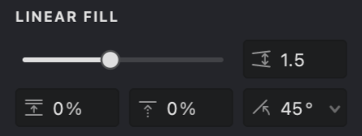
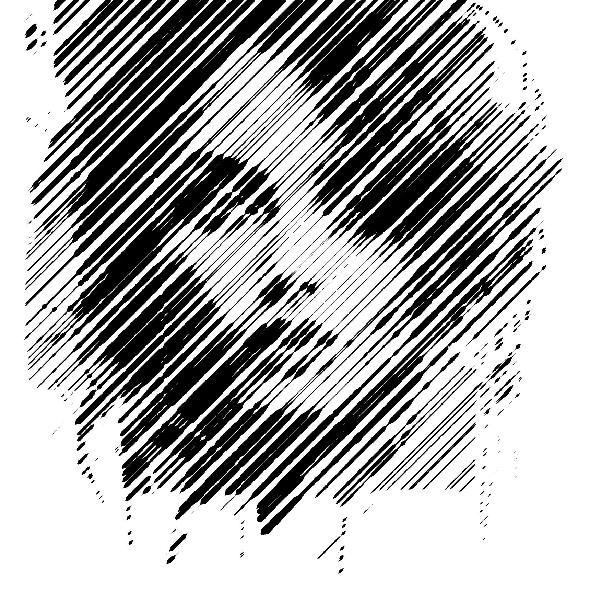
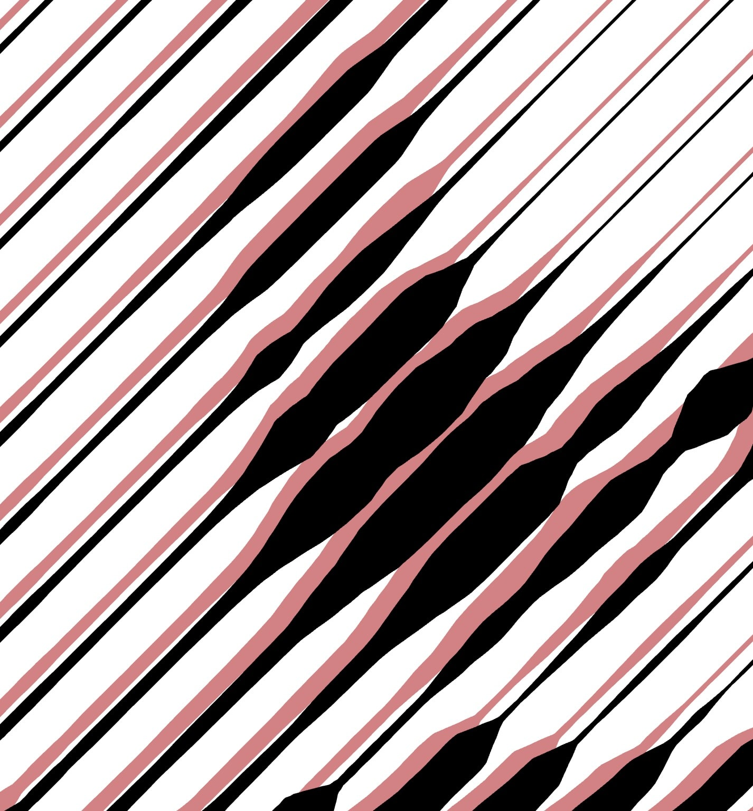

Linear fill
Linear fill creates patterns using parallel straight strokes, producing an engraving-like effect common in traditional printmaking. Each parameter offers specific control over the pattern's appearance and behavior, letting you achieve anything from subtle shading to bold, dramatic lines.
Linear Fill Settings¶
Adjust the Linear Fill using the settings found in the Properties Panel under the LINEAR FILL tab.

Here's a breakdown of the main settings:
 Interval (units): Sets the distance between adjacent strokes. Smaller values create denser, darker patterns, while larger values result in lighter, more spaced-out patterns.
Interval (units): Sets the distance between adjacent strokes. Smaller values create denser, darker patterns, while larger values result in lighter, more spaced-out patterns.
 Randomization (%): Introduces slight variations to the stroke spacing. Higher values create a more irregular, organic look, reducing visual repetition.
Randomization (%): Introduces slight variations to the stroke spacing. Higher values create a more irregular, organic look, reducing visual repetition.
 Shift (%): Offsets the entire pattern perpendicular to the stroke direction. This is useful for fine-tuning the pattern's position or aligning multiple overlapping fills.
Shift (%): Offsets the entire pattern perpendicular to the stroke direction. This is useful for fine-tuning the pattern's position or aligning multiple overlapping fills.
 Angle (°): Controls the orientation of the strokes. Adjust the angle to match the contours or desired flow within your image.
Angle (°): Controls the orientation of the strokes. Adjust the angle to match the contours or desired flow within your image.
Adjusting Linear Fill Settings¶
To modify the Linear Fill, select it in the Layers Panel and use the controls in the Properties Panel.
Adjusting Interval¶
- Find the Interval setting.
- Drag the slider or enter a specific numerical value.
Tip: Use Interval to control the perceived lightness or darkness of the filled area. Smaller intervals create darker tones.
| Interval: 0.5 | Interval: 1 | Interval: 2 |
|---|---|---|
.png) |
.png) |
Adjusting Randomization¶
- Find the Randomization setting.
- Adjust the slider or enter a percentage to add variation to stroke spacing.
| Randomization: 10% | Randomization: 50% | Randomization: 100% |
|---|---|---|
 |
 |
Adjusting Shift¶
- Find the Shift setting.
- Adjust the slider or enter a percentage to offset the pattern's starting position relative to the stroke direction.
| Shift: 25% | Shift: 50% | Shift: 90% |
|---|---|---|
 |
.jpg) |
.jpg) |
Adjusting Angle¶
- Find the Angle setting.
- Use the circular dial control or enter a specific angle in degrees.
| Angle: 45° | Angle: 90° | Angle: 0° |
|---|---|---|
.png) |
Common Properties¶
Linear Fill also uses these common fill properties:
Practice File¶
Experiment with the Linear Fill settings using this Vexy Lines file: UM3-Fills-Linear.lines